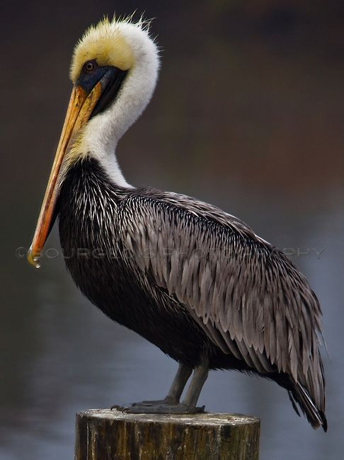

Louisiana
Louisiana sits above the Gulf of Mexico at the mouth of the Mississippi River, bordered by Arkansas to the north,
Mississippi to the east and Texas to the west. Originally colonized by the French during the 18th century, it became
U.S. territory as part of the historic Louisiana Purchase in 1803, and was admitted to the union in 1812. Louisiana’s
capital city is Baton Rouge. It is also home to the historic port city New Orleans, which is famous for its unique
cuisine, jazz and spectacular Mardi Gras festival.
| Date of Statehood |
Capital |
Population |
Size |
| April 30, 1812 |
Baton Rouge |
4.66 million |
51,988 square miles |
Motto
Union, Justice, Confidence
Bird
Eastern Brown Pelican

Interesting facts
-
In 1803, Thomas Jefferson doubled the size of the United States by purchasing the Louisiana Territory—828,000 square
miles of land between the Mississippi River and the Rocky Mountains—from France. Louisiana was the first of 13 states,
or parts of states, to be carved out of the territory in 1812.
-
Due to slow communications, the Battle of New Orleans was fought two weeks after the Treaty of Ghent was signed on
December 24, 1814, ending the War of 1812 between the United States and Great Britain. General Andrew Jackson, who led
between 6,000 and 7,000 troops to victory, emerged from the battle a national hero.
-
Louisiana is home to a wide diversity of cultures. Two prominent ethnic groups are Cajuns, descendants of a
French-speaking group of Acadians from Canada, and Creoles, people with a mixed French, Spanish, Caribbean, African
and/or Indian background.
-
At 34 stories high and 450 feet tall, the Louisiana State Capitol is the tallest of all state capitol buildings. On
September 8, 1935, Senator Huey Long—who had been instrumental in convincing the public to construct the new building in
1935—was assassinated in one of its corridors.